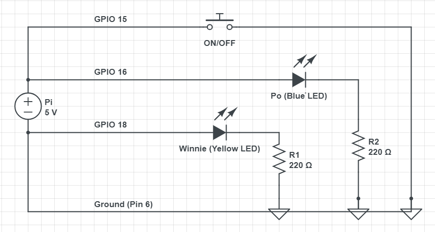

This project is cute interactive bear nightlight representing Po from Kung Fu Panda (Blue), and Winnie the Poo (Yellow).When you mention Po's favourite food, dumplings, Po will blink 3 times to indicate approval and agreement. Likewise, Winnie will blink when you talk about honey. Due to a delay in speech processing time, there may be a 3-5 second delay between when the word is said and the responding blinks.
Final Prototype!

